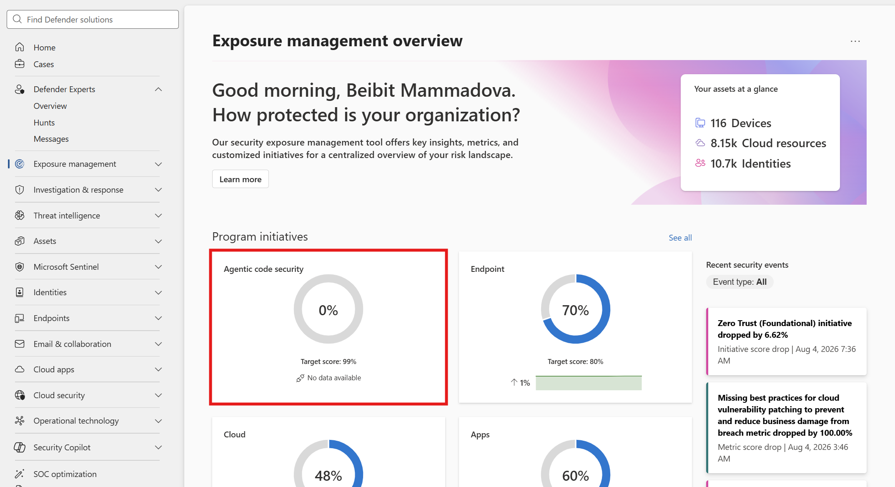
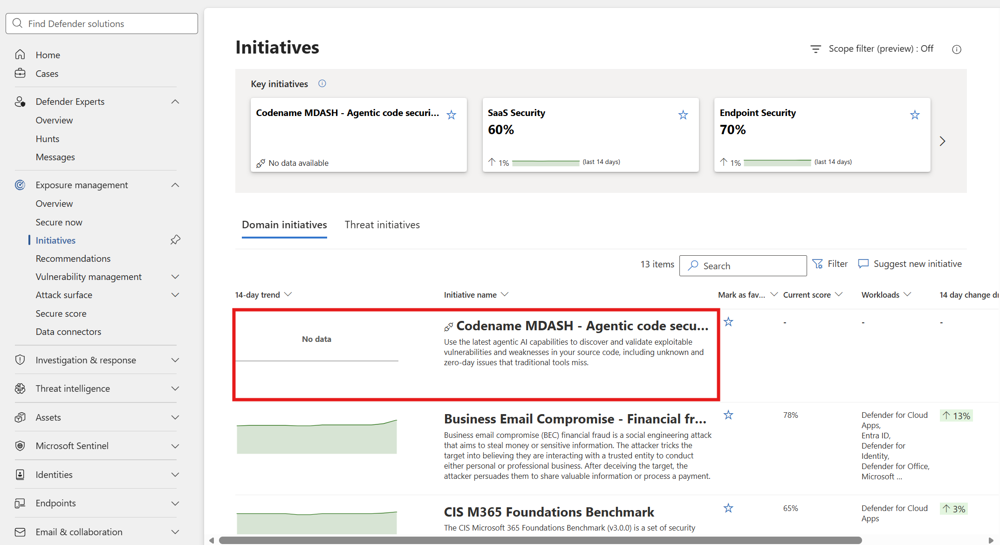

온보딩 시작 (진입점·약관 수락)
권한 설정(RBAC)을 마친 뒤 Step 1 — Defender 포털에서 이니셔티브 진입점을 선택해 온보딩 플로우를 시작하고 약관을 수락합니다. 그다음 Foundry 설정(Step 2)으로 전용 리소스를 만들고, 마지막으로 온보딩 완료(Step 3)에서 엔드포인트를 입력합니다. 전체 흐름은 개요를 참고하세요.
진입점(Entry points)
Defender 포털에서 다음 위치 중 하나로 온보딩 플로우를 시작합니다.
- Exposure Management > Overview → Agentic code security 선택
- Exposure Management > Initiatives → Codename MDASH - Agentic code scanner 이니셔티브 선택


약관 수락 (Step 1)
진입점에서 온보딩 플로우를 시작하면 약관을 검토하고 체크박스로 수락합니다. 약관을 수락해야 이후 온보딩 완료 단계에서 Save가 활성화됩니다.
다음 단계 약관 수락 후에는 곧바로 엔드포인트를 입력할 수 없습니다. 먼저 Foundry 설정에서 전용 리소스를 만들고 필수 모델을 배포해 Project endpoint·API key를 확보한 뒤, 온보딩 완료에서 입력·검증·저장합니다.